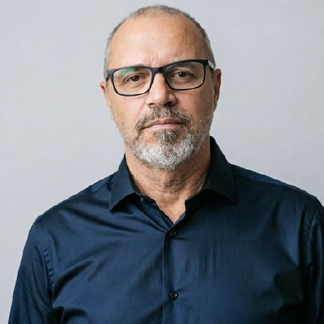

Plantão · LabIS — vaga de edição e pós-produçãoFala Bazi, tudo certo? Marcelão aqui. Impactos reais, sem mágica: uma peça com 24 milhões de views, contas que saíram das dezenas de milhares para mais de um milhão de seguidores — e uma esteira de IA que roda 100% na máquina, sem nuvem, sem licença e sem custo. A proposta é concreta: levar essa esteira para o laboratório que atende o curso inteiro. A matéria tem prova, vídeo — até de trenó voador.
Saí da TV PUC por um motivo inteiramente meu: os atrasos. Eu tinha, naquela fase, uma vida de solteiro garotão — e tratava o trabalho como algo menor do que ele era. Não houve conflito, a decisão foi correta, e a gratidão que levo é pelos gestores da comunicação com quem convivi — o senhor entre eles — que conduziram tudo sem drama.
Passados quase dez anos, sou casado, tenho casa e rotina. E enxergo com clareza a oportunidade de estudo e de convivência que deixei passar ali dentro.
Tem uma conta que eu faço com gratidão: a PUC foi a maior investidora da minha carreira. Foi por um projeto da casa — o Bosch + PUC, produzido por alunos para a empresa, pago pela Bosch — que eu entrei na TV PUC; e foi ela que me pagou para me transformar em quem eu sou. O sonho que me move nesta proposta é ver o conhecimento compartilhado fazendo na vida de outros alunos a diferença que a casa fez na minha.
Hoje horário e prazo são a primeira coisa que eu combino e a última que eu negocio.
A seguir, as provas materiais — vídeo do canal oficial da PUC-Campinas. Spoiler: trenó voador.
Estes vídeos são da época em que não existia tecnologia nenhuma disso: ingest, decupagem, legenda, tudo no braço, ao lado do senhor e da equipe da TV PUC. Não estão aqui como prova de nada — estão como memorial. Nos especiais de Natal, o Papai Noel saía do vídeo no telão e aparecia ao vivo no auditório, com canhão de confete, seguidor e a trilha gravada em multicanal sobre arranjo dos próprios funcionários. Registros publicados no canal oficial da PUC-Campinas:
E uma linha de gratidão que eu quero registrar: foi pela TV PUC que cheguei a finalista do 18º Prêmio FEAC de Jornalismo, na modalidade Cinegrafista, com a reportagem "Multiplicando sonhos, transformando realidades". O reconhecimento nasceu dentro desta casa — e é dele que eu mais me orgulho.
Do telão de 2016 para os números de hoje: os impactos reais estão logo abaixo — e depois a aba Sistemas, que eu peço ao senhor para não pular.
Produzidos na agência onde trabalho hoje — os nomes completos ficam no currículo. Aqui ficam os impactos, com link para conferir cada um. Não sou diretor lá: sou o produtor que faz as peças — e os números a seguir são de público e de obra.
De 60 mil para 1 milhão de seguidores no Instagram. Uma peça com 24 milhões de views, outras passando de 1 milhão. A maioria dos vídeos do canal no YouTube é minha.
De 50 mil para mais de 1 milhão de seguidores no Instagram — com conteúdo de produção e pós-produção da minha autoria.
Case completo de criação de audiência: do zero a 100 mil seguidores no TikTok — estratégia, captação, edição e rotina de publicação feitas por mim.
Cobertura em tempo real de um dos maiores projetos de saúde e esperança do país: lives diárias e mais de 50 peças verticais publicadas durante o evento.
Conteúdo institucional nos últimos 5 anos de crescimento da marca — envolvido de ponta a ponta na comunicação.
Peças produzidas para UPL, Noxxon e outras empresas de grande porte — além de clientes que a gente acompanha há mais de cinco anos.
Desde 2021 trabalho na Mariuzzo Mídia, agência de Campinas, na produção de conteúdo institucional para clientes como UPL, Mercado Livre, Sherwin-Williams, 3M e Henkel — e na equipe de projetos ligados ao Chitãozinho & Xororó e ao César Urnhani. Antes, na TV Câmara e na Band Campinas, fiz a direção de imagens do Jornal Diário e a montagem dos programas eleitorais de 2020. Na TV PUC e na TV Cultura assinei edição, direção de imagens e luminotécnica em projetos de Bosch, SEBRAE-SP e Secretaria da Cultura, além de coordenar equipe de cinegrafistas.
É exatamente o que a vaga descreve:
E a matéria não termina aqui. O bloco seguinte é o que nenhum outro candidato traz: uma esteira de automação que roda dentro do laboratório — sem enviar nada para fora dele.
Mercado inteiro e academias já produzem com IA na rotina. O que falta não é tecnologia — é ela dentro do laboratório. E antes de mostrar a esteira, deixa eu explicar o que "IA local" significa, porque é aqui que a proposta muda de categoria.
IA local, em 30 segundos: toda a inteligência roda no próprio computador — transcrição, decisão de cortes, revisão e montagem. Nada vai para a nuvem: nem um frame, nem uma entrevista de pesquisa. Custo recorrente zero — sem assinatura, sem licença, sem cobrança por minuto. E meus sistemas são software livre por filosofia: troca de conhecimento. Os repositórios já estão no ar, com a documentação e os explicativos de cada sistema — e o código, eu apresento pessoalmente: uma demonstração guiada, módulo por módulo. LGPD por desenho e independência total de fornecedor.
O item da vaga que mais me interessa é o último: dar suporte a docentes e estudantes. É aí que tenho algo concreto a oferecer — e prefiro ser específico, em vez de prometer "inteligência artificial".
Nos últimos anos aprendi Python e construí, para o meu próprio trabalho, rotinas que rodam 100% na máquina local: transcrição automática de entrevistas pelo Whisper offline, classificação de cortes por modelo local (Ollama), validação do mapa de montagem e exportação direta para o DaVinci Resolve em EDL e OpenTimelineIO. Nenhum arquivo sai do computador. Os repositórios estão no ar — documentação e explicativos de cada sistema no GitHub —, e o código em si, eu apresento pessoalmente: demonstração guiada, módulo por módulo. Contradição nenhuma: a filosofia é troca de conhecimento, e a troca começa na demonstração.
TCC, Projeto Integrador, podcast e produção institucional passam a ser buscáveis por palavra falada. Achar aquele trecho deixa de depender da memória de quem gravou.
Legenda, decupagem e exportação em lote deixam de consumir horas de estudante. Esse tempo volta para roteiro, reportagem e edição com intenção.
Entrevista de pesquisa, imagem de aluno, material de extensão: nada sai da máquina do laboratório. Para uma universidade, isso é condição, não detalhe.
Modelos rodam localmente e os formatos são abertos. Sem assinatura por assento, sem cobrança por minuto transcrito, sem dependência de fornecedor.
O detalhamento técnico — módulo por módulo, o que é ingest com IA, roteirização assistida, edição via MCP e ComfyUI com modelos locais, com o que já roda e o que é proposta — está em Os sistemas, na prática →
A correspondência atividade por atividade com a sua vaga, os repositórios e o passo a passo de um piloto dentro do horário estão na página da proposta →
Hoje eu já tenho trabalho. Não venho aqui porque preciso de emprego — venho porque preciso estudar, e isso a agência não me oferece.
Quero Engenharia de Software na PUC-Campinas. É o curso que transforma o que eu já faço de forma artesanal, sozinho, em algo que eu consiga construir, versionar e ensinar de verdade.
E aqui está o encaixe: Engenharia de Software na PUC é matutino, e a vaga do LabIS é das 14h às 23h. As duas coisas convivem sem conflito nenhum — eu estudo de manhã e trabalho à tarde e à noite, no mesmo campus. É exatamente a vida que a bolsa de estudos prevista na vaga torna possível.
Não separo as duas coisas: gostaria que o LabIS fosse, ao mesmo tempo, o meu posto de trabalho e o meu lugar de formação. Foi o que ele poderia ter sido na primeira vez. O que eu aprender em sala volta para o laboratório como código funcionando — não como trabalho de disciplina esquecido.
E a conta que fecha é boa para os dois lados: a PUC já me pagou para me transformar em quem sou — é a maior investidora da minha carreira. Esta proposta é a busca pelo retorno dela.
Em vez de descrever a automação, prefiro abrir o notebook no estúdio ou na ilha de edição do LabIS e processar material real do curso na frente de quem quiser ver — cronometrando o tempo economizado.
Disponibilidade: integral, segunda a sexta, das 14h às 23h, presencial no Campus I.
(19) 99946-2258 · Campinas, SP